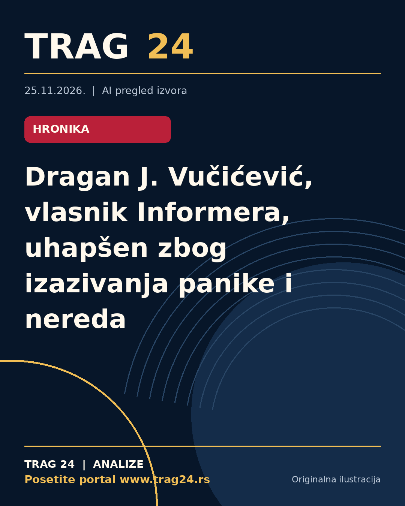

Dragan J. Vučićević, vlasnik Informera, uhapšen zbog izazivanja panike i nereda

ŠTA SE DOGODILO
Dragan J. Vučićević, vlasnik i glavni i odgovorni urednik tabloida "Informer" i istoimene televizije, uhapšen je danas po nalogu Drugog Osnovnog javnog tužilaštva u Beogradu. Razlog hapšenja su optužbe za izazivanje panike i nereda u produženom trajanju, kao i ometanje pravde.
HRONOLOGIJA
Vučićević je uhapšen nakon što su ga policajci zaustavili na oko 50 metara od zgrade u kojoj radi. Ovaj događaj je zvanično potvrđen tokom dana, a informaciju o hapšenju u Skupštini Srbije je objavio šef poslaničke grupe "Aleksandar Vučić-Srbija pobeđuje", Aleksandar Vučić, koji je izjavio da je hapšenje posledica novinarskog rada Vučićevića. Poslanici SNS-a su potom posetili Policijsku upravu Voždovac radi podrške uhapšenom, dok je Vučićevićev zamenik pokušao da uđe u policijsku upravu, gde su ga policajci odbili uz poruku da „ide na posao da menja Vučićevića".
ŠTA NAVODE IZVORI
Prema navodima portala Nova.rs, Vučićević se godinama ističe kao vlasnik režimskog tabloida i zagovarač politike bivšeg predsednika Srbije Aleksandra Vučića, uz brojne kontroverze, uključujući vređanja, pretnje i odavanje ličnih podataka. Portali Autonomija i Vreme izveštavaju da je hapšenje povezano s optužbama za izazivanje panike i nereda, kao i ometanje pravde. Takođe, Aleksandar Vučić komentarisao je hapšenje kao nepravedno i delo protiv jednog novinara zbog njegovog rada.
ŠTA JE POTVRĐENO
Potvrđeno je da je Dragan J. Vučićević uhapšen na osnovu naloga Drugog Osnovnog javnog tužilaštva u Beogradu, da postoji optužba za izazivanje panike i nereda u produženom trajanju, kao i za ometanje pravde. Hapšenje je sprovedeno u beogradskoj Policijskoj upravi Voždovac. Izjave Aleksandra Vučića i reakcije poslanika SNS-a potvrđuju ozbiljnost slučaja u političkom i medijskom kontekstu.
ŠTA NIJE POTVRĐENO
Iz dostupnih izvora nije potvrđeno detaljno pravno tumačenje dokaza protiv Vučićevića, kao ni ishod daljeg sudskog postupka. Takođe, nisu pružene potvrde o tačnim činima koji su doveli do optužbi za izazivanje panike i nereda, niti da li će Vučićević biti pušten na slobodu ili pritvoren na duži vremenski period.
ŠTA OSTАJE OTVORENO: Ostaje nejasno kako će se dalje razvijati pravni postupak protiv Vučićevića, da li će biti dodatnih optužbi ili potvrda krivice. Uz to, pitanje uticaja hapšenja na medijsku scenu i uređivačku politiku Informera, kao i njegova buduća uloga u javnoj sferi, takođe su otvoreni za dalju analizu.
Izvori
- https://nova.rs/vesti/hronika/ko-je-dragan-j-vucicevic-vlasnik-informera-koji-je-danas-uhapsen-vredjao-pretio-odavao-licne-podatke-stradale-u-padu-nadstresnice-nazvao-satro-zrtvama/
- https://autonomija.info/uhapsen-dragan-j-vucicevic/
- https://vreme.com/vesti/dragan-j-vucicevic-uhapsen-zbog-izazivanja-panike/
Ova analiza je pripremljena uz pomoć veštačke inteligencije na osnovu javno dostupnih izvora. Navodi izvora nisu nužno nezavisno potvrđeni.